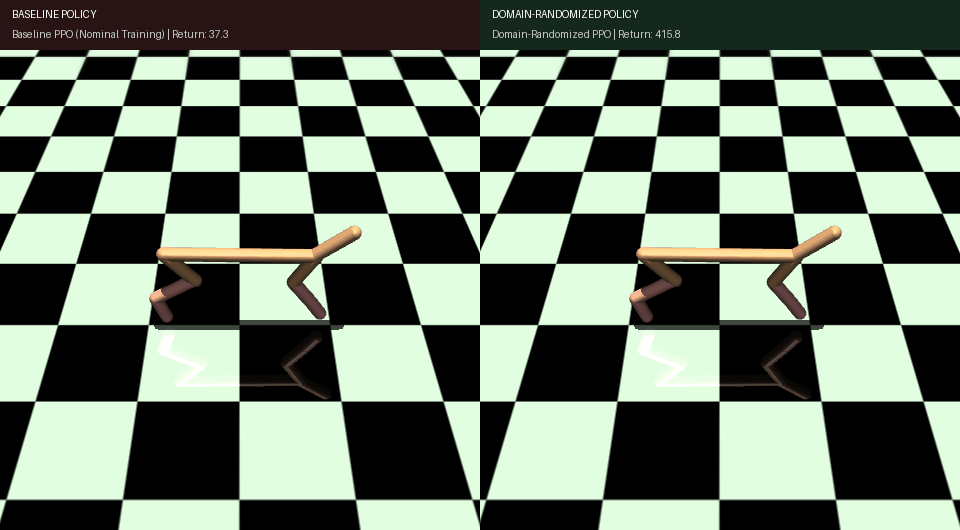
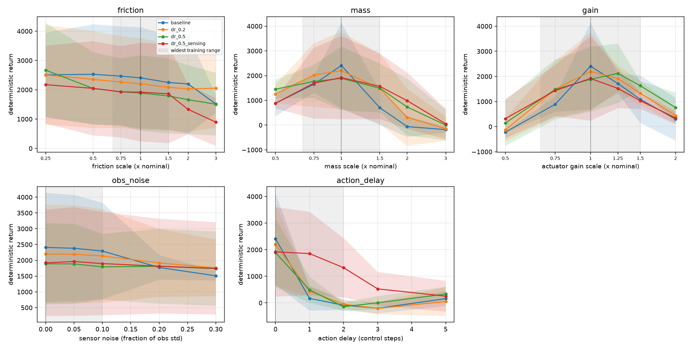

A systematic, reproducible empirical benchmark on continuous locomotion dynamics (HalfCheetah-v5). Evaluating nominal performance trade-offs, out-of-distribution retention bounds, and catastrophic temporal latency collapse.
Side-by-side rollout of policies on HalfCheetah-v5 exposed to an unmodeled 2-step actuation delay ($\tau = 2$). The baseline policy completely collapses due to temporal phase lag, while the domain-randomized policy continues sprinting forward.

Trained exclusively on deterministic nominal physics. When communication or servo lag delays actions by just 2 steps, control commands lag behind state observations, inducing resonance and instantaneous tripping.
Trained with randomized observation noise and temporal jitter. The policy learns feedback-robust closed-loop control that dampens high-frequency overreactions and retains full locomotion stability.
python demo.py --axis action_delay --value 2 --steps 300 --out assets/demo_comparison.gif
Pre-registered hypotheses evaluated against 500 deterministic evaluation episodes on continuous locomotion.
Increasing domain randomization strength strictly improves retention rate under perturbations from 53% (baseline) → 60% (dr_0.2) → 70% (dr_0.5) → 73% (dr_0.5_sensing). Nominal return incurs a modest, predictable penalty from 2,407 to 1,918.
Under severe body mass variations, randomized policies improved mean return from 599.71 to 1,089.03 (+81.6% improvement). Under motor gear degradation, returns jumped from 756.44 to 1,227.99 (+62.3% improvement).
Action delay causes catastrophic collapse in both baseline (return: 10.3) and pure physics DR (59.9 and 170.6). Only temporal-exposure variants sustained 989.76 (Δ = +979.45, Welch p = 0.03). Randomizing masses and frictions does NOT protect against latency.
Across all 25 perturbation settings, the worst-case episode return floor improved by 3.3×, elevating from -331.99 in baseline to -101.09 in dr_0.5_sensing, eliminating catastrophic tumbling.
Inspect how each policy variant responds as individual physical axes are pushed beyond their nominal bounds.

Evaluated across 25 perturbation settings covering body mass multipliers [0.5×, 1.8×], ground friction multipliers [0.3×, 2.0×], actuator gear scaling [0.6×, 1.4×], sensor observation noise [σ = 0.2], and actuation delay [τ = 1, 2 steps].
Measured outcomes on HalfCheetah-v5 across all 20 training runs (mean ± sample std dev).
| Policy Variant | Nominal Return | Retention Rate | Worst-Case Return | Mass Resilience | Delay Resilience | Overall Rank |
|---|---|---|---|---|---|---|
|
baseline
Nominal dynamics only
|
2,407.92 ± 1725.80 | 53% ± 13% | -331.99 ± 98.90 | 599.71 ± 546.60 | 10.32 ± 8.87 | Rank 4 (Fragile) |
|
dr_0.2
Mild physics DR (±20%)
|
2,201.58 ± 1562.02 | 60% ± 5% | -291.97 ± 226.98 | 846.36 ± 673.80 | 59.92 ± 61.12 | Rank 3 |
|
dr_0.5
Aggressive physics DR (±50%)
|
1,889.23 ± 1287.78 | 70% ± 5% | -252.68 ± 134.41 | 1,089.03 ± 815.70 | 170.62 ± 156.40 | Rank 2 |
|
dr_0.5_sensing ⭐
Physics DR + Sensor & Delay Jitter
|
1,918.71 ± 1682.59 | 73% ± 11% | -101.09 ± 259.05 | 1,032.55 ± 834.10 | 989.76 ± 849.25 | Champion (Robust) |
Mean Perturbed Return / Nominal Return across all 24 off-nominal grid settings.
Validation of deployed policies under real-world runtime constraints: TorchScript export, FastAPI microservice, and closed-loop acceptance tests.
Policies are packaged into lightweight, high-performance TorchScript inference artifacts and exposed via a standard REST API endpoint POST /act.
python -m robust_rl.deploy \
--model runs/robust_HalfCheetah-v5/dr_0.5_sensing/seed_1/model.pt \
--host 0.0.0.0 --port 8000Simulated robot runs a full 1,000-step episode in closed loop against the live HTTP microservice under active sensor noise (σ = 0.20) and compares bit-for-bit against local offline rollouts.
powershell -File .\make.ps1 test # 44/44 unit tests passingIf you use this benchmark, methodology, or perturbation wrappers in your research, please cite this work:
@software{raghunath2026sim2real,
author = {Raghunathareddy, GR},
title = {Quantifying Sim-to-Real Robustness in PPO via Domain Randomization},
year = {2026},
institution = {REVA University, Bengaluru},
url = {https://github.com/Raghunath2604/-Sim-to-Real_Robustness},
note = {A benchmark suite across 5 perturbation axes with closed-loop acceptance testing}
}